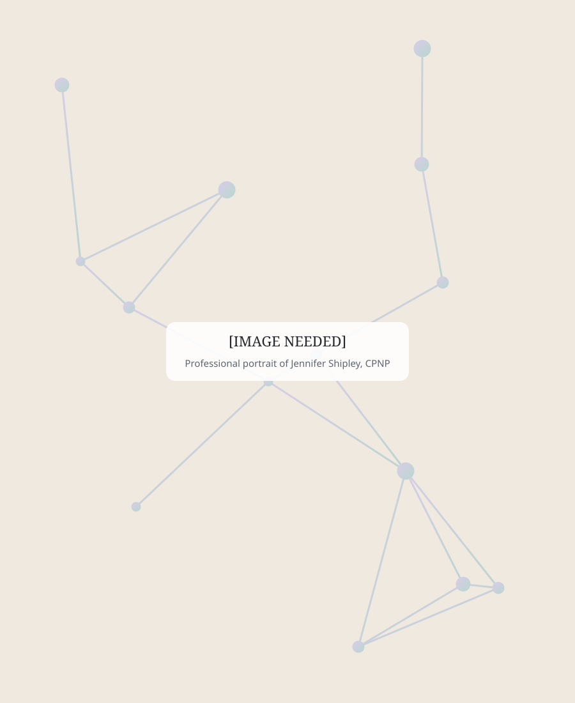
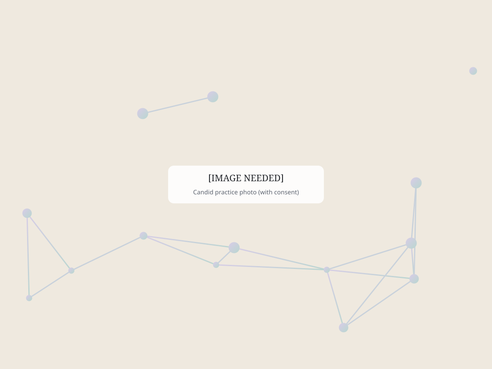

About Shipley Pediatrics
Pediatric Care Built Around Your Child
At Shipley Pediatrics, we believe great pediatric care starts with something simple: taking the time to truly know your child.
Every child has a story. Every family has questions. And sometimes, understanding what a child needs means looking beyond the most obvious symptom.
That's the kind of care Jennifer Shipley, CPNP, set out to create.

Meet Jennifer Shipley, CPNP
A Certified Pediatric Nurse Practitioner with decades of experience.
Jennifer Shipley is a Certified Pediatric Nurse Practitioner with decades of experience caring for children and families, including extensive experience in pediatric neurology.
Throughout her career, Jen has cared for children across the spectrum—from routine pediatric needs to complicated neurologic, developmental, and chronic health concerns.
Her experience has shaped a simple belief:
Children deserve care that looks at the whole picture.
Today, that philosophy is at the heart of Shipley Pediatrics.
Experience that goes deeper
A unique perspective as a pediatric provider.
Jen's background in pediatric neurology gives her a unique perspective as a pediatric provider.
She has spent years working with children experiencing complex conditions involving development, behavior, headaches and migraines, attention concerns, seizures, autonomic symptoms, and other neurologic challenges.
That experience doesn't mean every child who comes to Shipley Pediatrics has a complex condition. It means that when something isn't straightforward, Jen is comfortable asking more questions, looking deeper, and helping families determine the appropriate next step.
For families seeking routine pediatric care, that experience provides another layer of confidence. For families with complex kids, it can mean finally feeling like their provider understands the bigger picture.

Why Shipley Pediatrics?
Traditional healthcare doesn't always give providers or families the time they need.
Appointments can feel rushed. Questions get saved for next time. Parents may find themselves seeing different providers who don't know their child's history. And families with complex children can spend significant time moving between specialists trying to connect the pieces.
Shipley Pediatrics was created to offer something different.
More Time
Time to listen. Time to ask questions. Time to understand what's happening beyond the immediate concern.
Stronger Relationships
Children's health changes as they grow. Knowing your child over time gives us context that can't always be captured in a medical chart.
Whole-Child Thinking
Health isn't just one symptom or diagnosis. Development, sleep, nutrition, behavior, lifestyle, environment, medical history, and family concerns can all be part of the picture.
Experience With Complexity
Jen's pediatric neurology background allows Shipley Pediatrics to comfortably care for families whose children may need a deeper level of understanding.
Care That Still Feels Personal
Families should feel comfortable asking questions, sharing concerns, and being part of decisions about their child's health.
Primary Care That Understands Complex Kids
Shipley Pediatrics is a pediatric practice first.
We provide families with an option for ongoing pediatric primary care through Pediatric Direct Primary Care, while also offering Expanded Pediatric Care for children who need more specialized or in-depth support.
Shipley's experience with complex pediatric and neurologic conditions is what makes the practice different—but it doesn't define which children belong here.
Your child doesn't need to have a complicated medical history to benefit from thoughtful, relationship-based pediatric care. And if your child's needs do become more complicated, you're already connected to a provider who understands how to look deeper.
Complex-care expertise
Specialized Care for Complex Needs
In addition to primary care, Shipley Pediatrics supports families navigating concerns such as:
Shipley Pediatrics also provides a dedicated care pathway for families navigating suspected or diagnosed PANS and PANDAS.
Explore PANS & PANDAS Care- ADHD and ADD
- Migraines and recurring headaches
- POTS and autonomic concerns
- Neurologic conditions
- Developmental and behavioral concerns
- Functional and whole-child health concerns
- Complex or overlapping pediatric symptoms
Care philosophy
A Partner in Your Child's Care
Parents know their children. You see the changes others may not notice. You know when something feels different. And you bring an important perspective to every conversation about your child's health.
At Shipley Pediatrics, we believe families should be active partners in their child's care. Jen's role isn't simply to tell families what to do. It's to listen, provide medical guidance, explain options, answer questions, and work alongside families to determine the appropriate path forward.
Because good pediatric care isn't something that happens to a family. It's something we build with them.
Birth through age 21
Care That Grows With Your Child
From infancy through adolescence and into young adulthood, your child's needs will change.
Shipley Pediatrics cares for children from birth through age 21, giving families the opportunity to build an ongoing relationship with a provider who understands their child's history and can help guide their care as they grow.
Whether your family is looking for a pediatric primary care home or support for a more complex concern, we're here to help you find the right path.
Meet Jen. Ask Questions. See If Shipley Feels Right.
Choosing your child's healthcare provider is personal. If you're considering Shipley Pediatrics for your child's primary care, we invite you to start with a complimentary Meet & Greet with Jen. Learn about the practice. Ask questions. Get to know Jen. Then decide whether Shipley Pediatrics feels like the right fit for your family.
No commitment. No enrollment forms. Just a conversation.